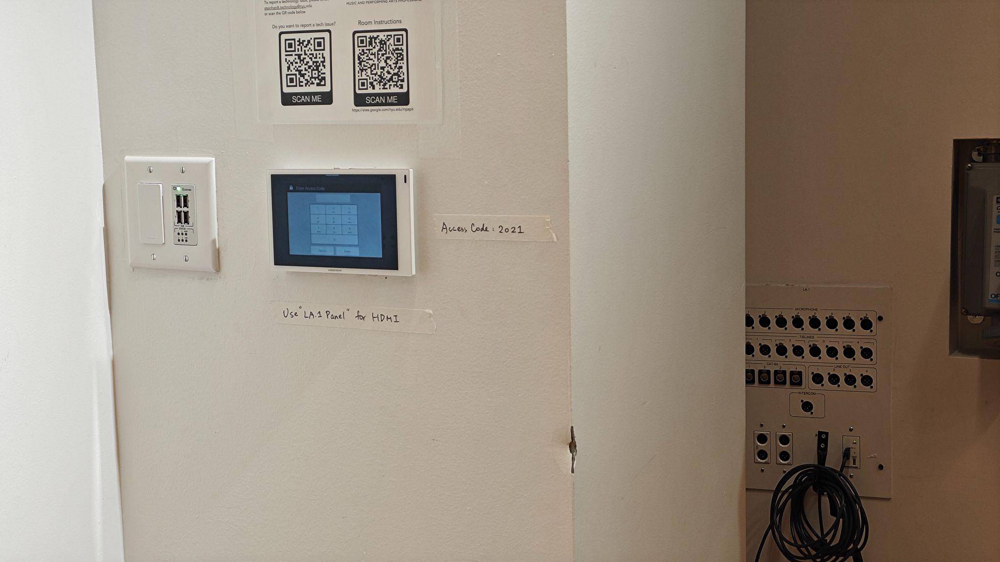

Room 570
Laptop Setup
Connect your laptop to the HDMI input panel located on the back wall of the room. Login to the Crestron panel using passcode 2021.

Note: The Crestron panel position is separate from the HDMI input panel.